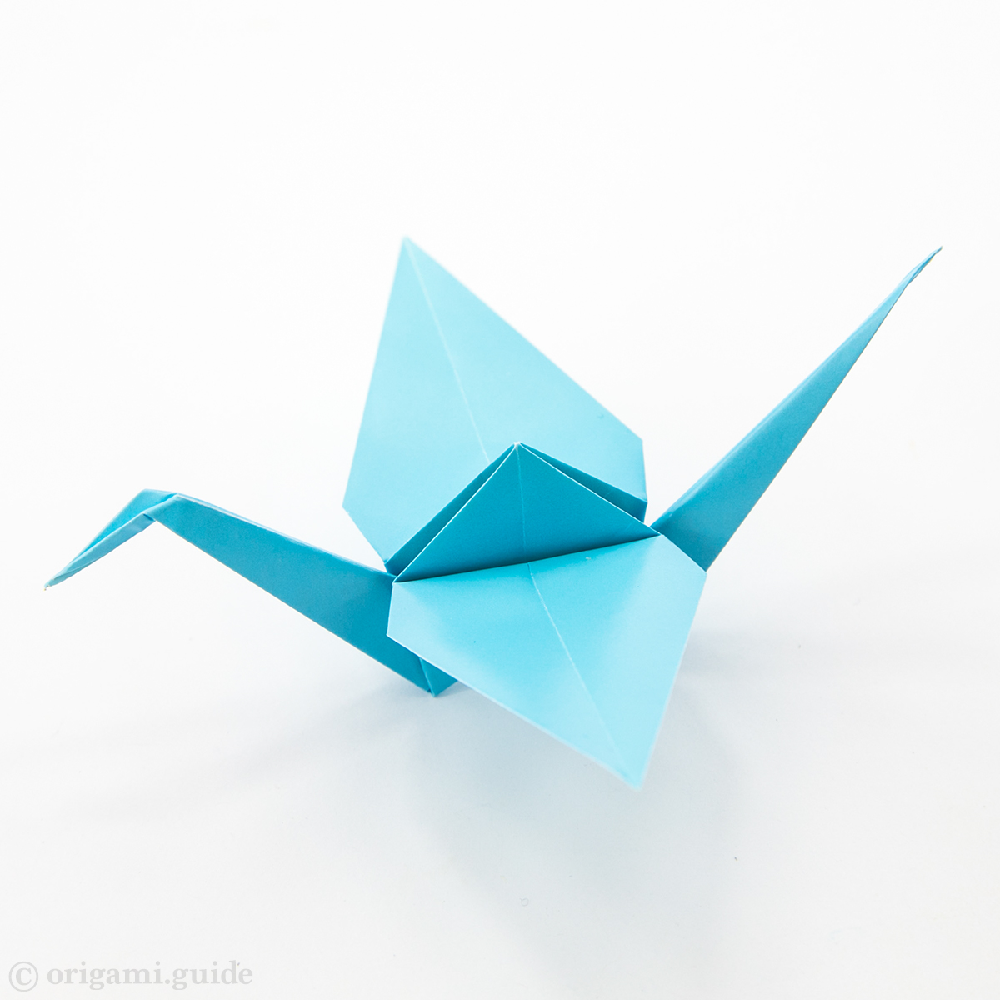
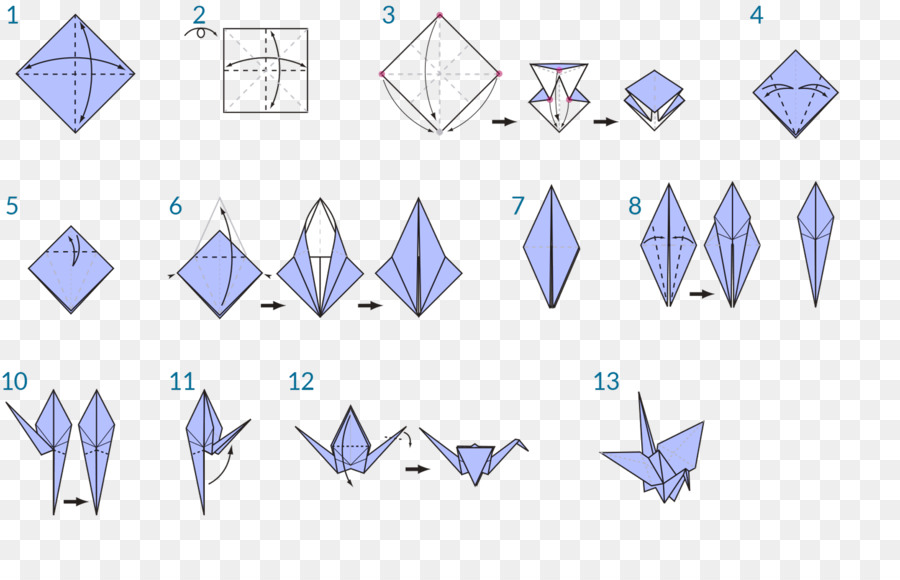

Click on the image to see the video of the tutorial

Hummingbird


Orizuru or Paper Crane
- The orizuru, or paper crane, is a design that is considered to be the most classic of all Japanese origami.
- In Japanese culture, it is believed that its wings carry souls up to paradise, and it is a representation of the Japanese red-crowned crane, referred to as the "Honourable Lord Crane" in Japanese culture.
 Learn Origami
Learn Origami